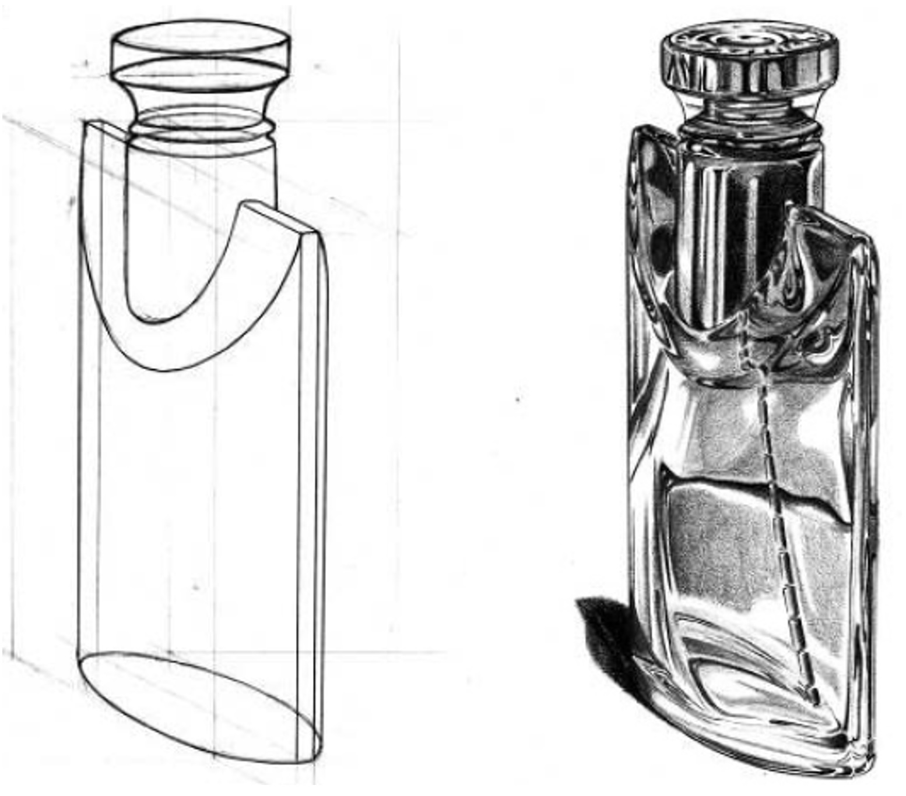
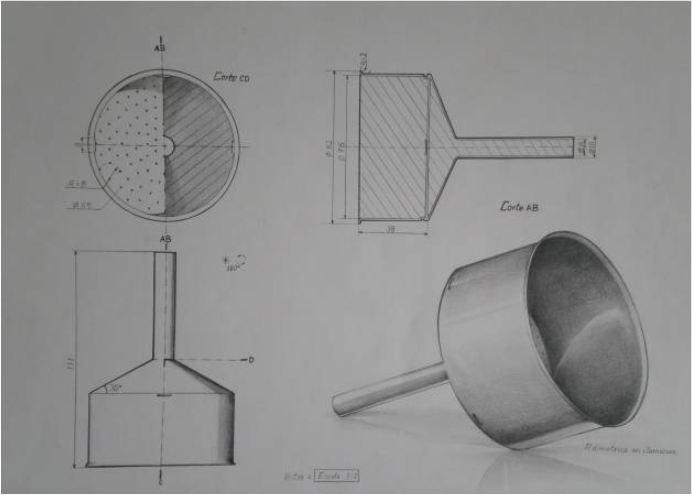
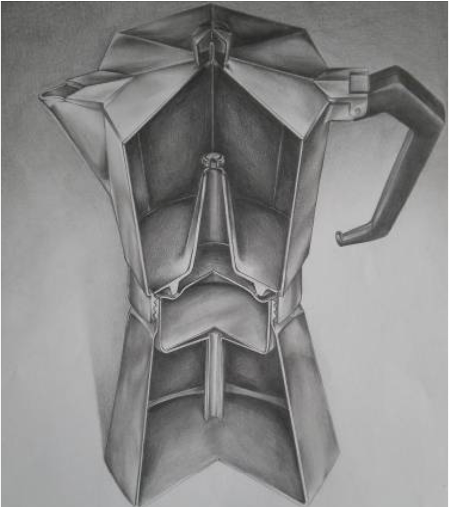
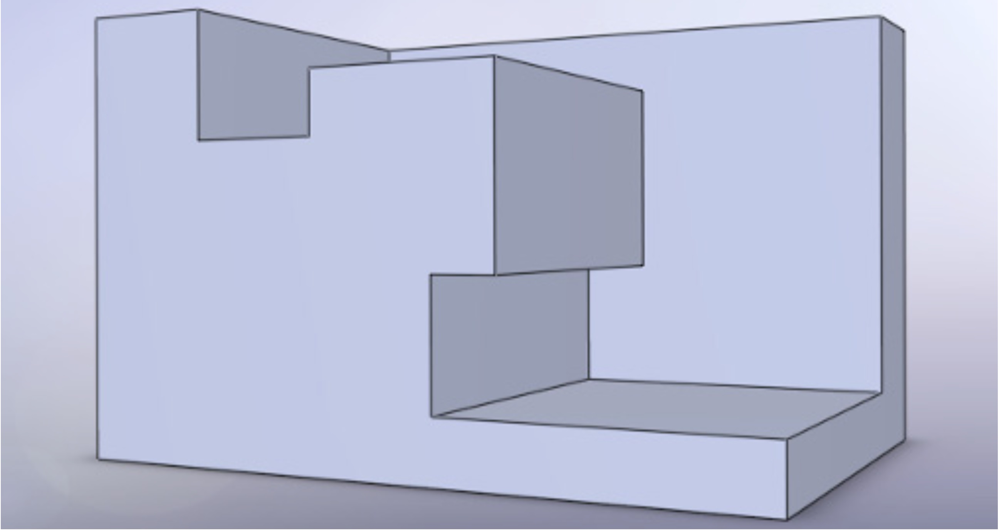

En el documento actual se detalla la actividad que se hizo en la semana 5. También se explicará sobre las diferentes técnicas que se utilizan al momento de realizar un boceto (dibujos a mano alzada).
En esta semana, se siguió realizando el tercer paso (Idear) del Design Thinking. Al haber establecido tres estrategias de solución, se prosiguió a hacer la descripción de tres conceptos de solución en los cuales se explica cómo resolver el problema definido por el grupo. También se realizaron bocetos (dibujos a mano alzada) sobre estos conceptos de solución con el fin de establecer un diseño para cada uno de estos.
La delineación de la forma sienta las bases de todas las artes visuales, por lo que el dibujo es una de las ramas más importantes de estudio en las escuelas de arte y arquitectura, así como en las de ingeniería. Aunque pueda parecer lo contrario, la aparición de las herramientas gráficas de modelado tridimensional, lejos de mermar la importancia del dibujo, lo ha reforzado, ya que resulta mucho más productivo realizar bocetos a mano alzada del producto en una primera fase de concreción de la idea que iniciar el diseño del producto directamente en el ordenador (1). Este tipo de bocetos resultan relevantes al momento de plasmar una idea, ya que permiten resaltar los aspectos más importantes del diseño. Sin embargo, para realizar un dibujo que permita resaltar las características del producto se debe hacer uso de diferentes técnicas como:
1. Luces y Sombras: Al momento de realizar un boceto es necesario darle a este una percepción de volumen, ya que al hacerlo se tendrá más definido el concepto de la solución en la realidad. Una técnica utilizada en este ámbito es el uso de luces y sombras el cual crea una variación tonal entres diferentes partes del cuerpo lo cual crea una sensación de volumen del cuerpo dibujado.
Fuente: Diferencia entre dos bocetos al usar sombras y luces. Sacado de la ref.: (1)
2. Sistemas de representación: Otra forma de dar una sensación de volumen a los cuerpos es al hacer uso de sistemas de representación:(1)
a) Sistema Diédrico: Este es el más objetivo de los tres ya que permite saber cómo son cada una de las caras de un objeto con sus dimensiones reales. El número de caras necesarias para definir un objeto depende de la complejidad del mismo. Normalmente se utilizan tres que requieren mirar el objeto desde diferentes puntos de vista: • El alzado sería el dibujo obtenido al contemplar el objeto de frente. • El perfil es la vista lateral del mismo. • Y la planta que se obtiene mirando el objeto desde arriba.
Fuente:Vista de un objeto desde su alzado, perfil y planta. Sacado de la ref.: (1)
b) Sistema Axonométrico: Representa los cuerpos con un solo dibujo que proporciona una visión de conjunto del volumen. Estas perspectivas son muy utilizadas en la renderización de objetos por la sencillez de su trazado y su fácil interpretación.
Fuente:Sistema axonométrico del boceto de una cafetera. Sacado de la ref.: (1)
c) Sistema Cónico: La perspectiva cónica es capaz de dotar de realismo al boceto. Esto conduce a incluir en el dibujo deformaciones y variaciones de tamaño que percibimos en nuestra visión.
Fuente:Volumen geométrico representado en una perspectiva cónica oblicua del sistema cónico. Se ha empleado una línea de horizonte baja que produce un efecto de contrapicado en la imagen. Sacado de la ref.: (1)
1.Galan Serrano J, Torres AM, García DD. Guía de dibujo y presentación de diseños de productos. 2011. 142 p.